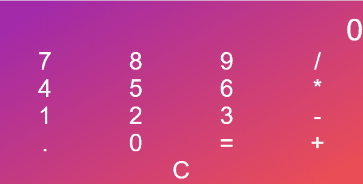
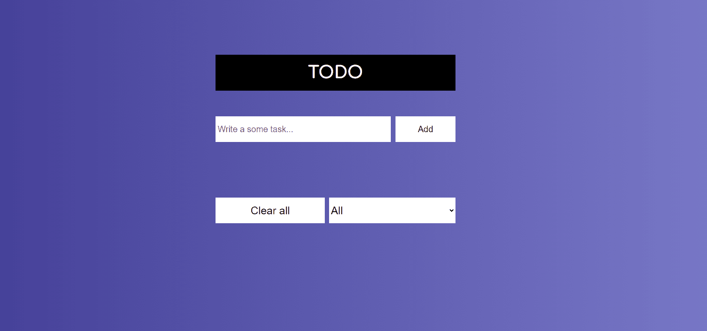

Используемые технологии:
- HTML5
- CCS3
- JS6
- WEBPACK5
- NODE JS
Что реализовано:
- Адаптивная верстка по макету из Figma
- Burger-menu
- Слайдер по кнопке
- Touch slider
Используемые технологии:
- HTML5
- CCS3
- JS6
- WEBPACK5
- NODE JS
Что реализовано:
- Адаптивная верстка по макету из Figma
- Burger-menu

Используемые технологии:
Что реализовано:
- Вычисления с помощью 4 операторов
- Вычисления операндов с плавающей запятой

Используемые технологии:
Что реализовано:
- Добавление новой задачи
- Редактирование существующей задачи
- Отметка о выполнении задачи
- Удаление задачи
- Очистка всего списка задача
- Сортировка задач на "Выполненые" и "Невыполненные"
- Использование localstorage для сохранения списка задач после перезагрузки страницы